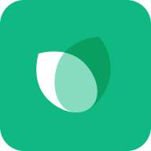

Frontend Developer
회고를 통해 성장하는 프론트엔드 개발자
프로젝트를 진행하며 단순히 기능을 구현하는 데서 그치지 않고, 문제의 원인과 개선 방향을 꾸준히 기록하고 다음에 반영하는 방식으로 개발해왔습니다.
인증 구조 개선, 이미지 최적화, 모바일 환경 확장과 같은 작업을 수행하며 단순 구현을 넘어 사용자 경험과 성능, 플랫폼 특성을 함께 고려하는 개발을 지향합니다.
About
Project

Deep Dive
환경 간 데이터 단절 해결 · 동시성 제어 · 세션 만료 UX 개선
/api/media-image/[id]
기반 Proxy API 설계
Cache-Control: immutable
적용
브라우저 제약 극복 → 하이브리드 앱 전환
manifest.json만으로는 다크/라이트 테마 전환 시 시스템 UI(주소창) 색상 실시간 동기화 불가localStorage를 확인해 메타 태그를 즉시 수정하는 인라인 스크립트 삽입 → 앱 실행 시 테마 색상이 뒤늦게 적용되는 시각적 노이즈 제거beforeinstallprompt 이벤트를 캡처해 서비스 내 설치 배너 구현, 해당 이벤트를 미지원하는 브라우저(Safari, Vivaldi 등)를 위한 커스텀 안내 모달 별도 제작display-mode: standalone 감지로 중복 배너 노출 제어 → 네이티브 앱에 가까운 사용 경험 제공Google Studio 도입으로 제한된 리소스 안에서 디자인 품질 확보
Google Studio 도입 전/후 비교